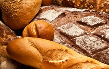

| Receitas Salgadas |
Clique aqui para ir ao site com as Receitas Doces
|
Pastel |
 Pão |
Crepe |
Ingredientes
• 20 discos de massa para pastel (cerca de 320 g)
• 1 xícara (chá) de músculo cozido e desfiado (cerca de 250 g cru)
• 1 cebola
• 2 colheres (sopa) de uva-passa preta
• 4 azeitonas verdes sem caroço
• 1 ovo cozido
• 1/2 xícara (chá) de caldo de carne caseiro (ou água)
• 1/2 colher (sopa) de azeite
• 1/2 colher (chá) de páprica doce
• 1/2 colher (chá) de cominho
• 1 pitada de páprica picante
• 2 talos de cebolinha
• 1 gema de ovo para pincelar
• sal a gosto
Modo de preparo
1. Preaqueça o forno a 180 ºC (temperatura média) e retire a massa de pastel da geladeira.
2. Descasque e fatie a cebola em meias-luas finas. Descasque e pique o ovo cozido em cubinhos.
Fatie as azeitonas. Lave, seque e fatie a parte verde da cebolinha.
3. Leve ao fogo médio uma panela pequena. Quando aquecer, regue com o azeite e junte a cebola.
Tempere com uma pitada de sal e refogue por cerca de 5 minutos, até ficar bem dourada. Acrescente o cominho e as pápricas doce e picante. Misture bem.
4. Adicione a carne desfiada, as azeitonas e as uvas-passas. Tempere com sal e regue com o caldo. Misture e deixe cozinhar por cerca de 1 minuto,
sem deixar secar - o recheio deve ficar úmido. Desligue o fogo e misture o ovo e a cebolinha picados. Transfira para uma tigela.
5. Coloque cerca de 2 colheres (sopa) do recheio no centro de um disco de massa.
Passe água em toda a borda da massa com o dedo - isso impede que os pastéis abram na hora de assar.
Cubra com outro disco e pressione bem as bordas para fechar.
6. Torça e pressione a borda a cada 2 cm para fechar o pastel da mesma forma que uma empanada (se preferir, aperte com um garfo,
mas com cuidado para não furar a massa). Transfira para uma assadeira grande, de preferência antiaderente, e repita o processo para formar os outros pastéis.
7. Numa tigelinha, misture a gema com 1 colher (sopa) de água e pincele sobre os pastéis. Leve ao forno e deixe assar por cerca de 20 minutos, até dourar. Retire do forno e sirva a seguir.
Ingredientes
• 3 ½ xícaras (chá) de farinha (875ml)
• 2 colheres (sopa) de fermento em pó (30ml)
• 1 colher (sopa) de açúcar (15ml)
• 2 colheres (chá) de pimenta malagueta (10ml)
• 2 xícaras (chá) de queijo cheddar ralado (500ml)
• 2/3 de xícara (chá) de manteiga gelada em cubos (160ml)
• 1 ¾ de xícara (chá) de leitelho (430ml)
• Sal e pimenta
Modo de preparo
1. Preaqueça o forno a 230°C.
2. Em uma vasilha grande, misture a farinha, o fermento em pó, o açúcar, a pimenta malagueta, o sal e a pimenta.
3. Adicione a manteiga à mistura de farinha e amasse até obter a aparência de fubá grosso.
4. Acrescente o cheddar ralado e misture bem.
5. Adicione o leitelho e mexa até ficar homogêneo.
6. Não mexa muito ou o pão de minuto ficará duro.
7. Em uma superfície polvilhada levemente com farinha, abra a massa com as mãos ou um rolo até obter um centímetro e meio de espessura.
8. Use um cortador de massa de sete centímetros e meio.
9. Continue trabalhando a massa (mas não demasiadamente) até usá-la.
10. Disponha a massa em uma assadeira coberta com papel manteiga.
11. Asse por cerca de 15 minutos ou até dourar bem.
12. Retire do forno e pincele os pãezinhos com manteiga derretida.
13. Mantenha-os aquecidos.
Rende de 12 a 15 porções.
Ingredientes
• 3 ovos
• 1 ½ xícara (chá) de leite
• 2 ¼ xícaras (chá) de farinha de trigo
• 1 colher (chá) de óleo de noz-macadâmia
• Modo de preparo
Modo de preparo
1. Misture todos os ingredientes com uma xícara e meia (chá) de água.
2. Aqueça uma frigideira antiaderente e adicione o óleo em movimentos circulares de forma a recobrir toda a superfície.
3. Acrescente cerca de um quarto de xícara (chá) da mistura à frigideira em movimentos circulares no sentido anti-horário para que a massa fique uniforme.
4. Cozinhe por cerca de dois minutos ou até que a parte de baixo da massa esteja levemente dourada e vire para cozinhar o outro lado.
5. Repita o procedimento até a mistura acabar.
Rende cerca de 30 unidades.